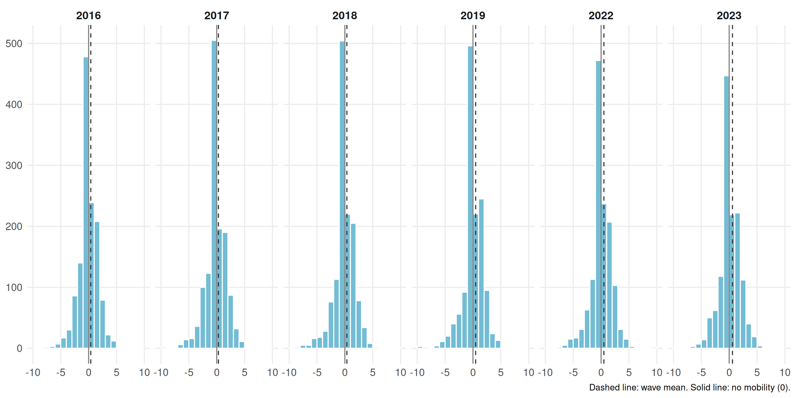
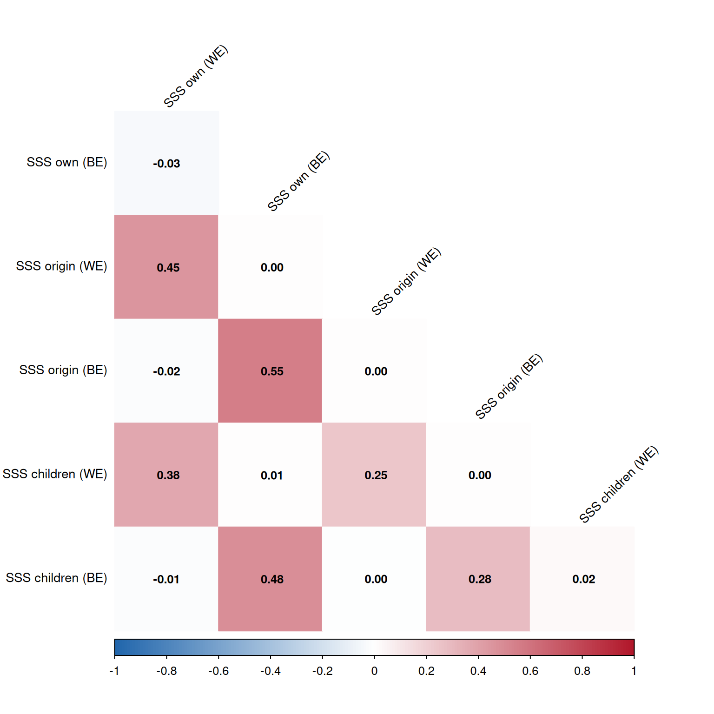
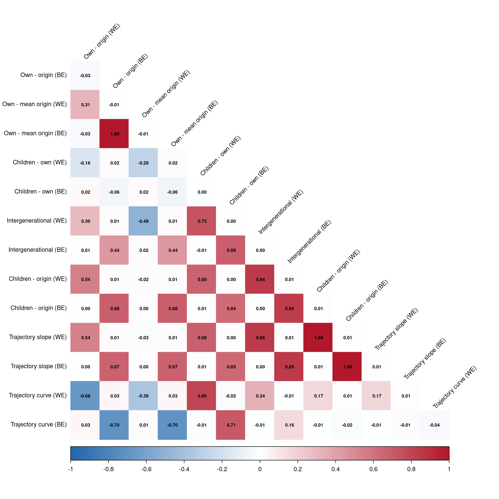
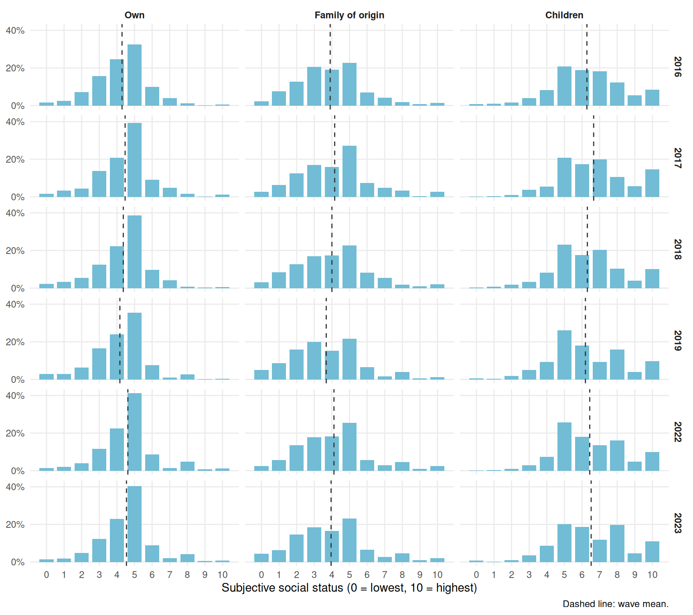

Code
plot_mov("mov_dir") +
labs(title = NULL, caption = "Dashed line: wave mean. Solid line: no mobility (0).")
vars_wb <- c(
ess_cwc = "SSS own (WE)",
ess_mean = "SSS own (BE)",
ess_og_cwc = "SSS origin (WE)",
ess_og_mean = "SSS origin (BE)",
ess_hijos_cwc = "SSS children (WE)",
ess_hijos_mean = "SSS children (BE)"
)
cor_wb <- df_study1 %>%
ungroup() %>%
select(all_of(names(vars_wb))) %>%
mutate(across(everything(), as.numeric)) %>%
cor(method = "spearman", use = "pairwise.complete.obs")
rownames(cor_wb) <- colnames(cor_wb) <- unname(vars_wb)
corrplot(cor_wb,
method = "color",
type = "lower",
diag = FALSE,
order = "original",
addCoef.col = "black",
number.cex = 0.8,
number.digits = 2,
tl.col = "black",
tl.cex = 0.85,
tl.srt = 45,
cl.cex = 0.8,
col = colorRampPalette(c("#2166AC", "white", "#B2182B"))(200),
col.lim = c(-1, 1),
is.corr = TRUE,
mar = c(0, 0, 1, 0))
vars_mov <- c(
mov_dir_cwc = "Own - origin (WE)",
mov_dir_mean = "Own - origin (BE)",
mov_og_cwc = "Own - mean origin (WE)",
mov_og_mean = "Own - mean origin (BE)",
mov_exp_cwc = "Children - own (WE)",
mov_exp_mean = "Children - own (BE)",
mov_inter_cwc = "Intergenerational (WE)",
mov_inter_mean = "Intergenerational (BE)",
mov_exp_og_cwc = "Children - origin (WE)",
mov_exp_og_mean = "Children - origin (BE)",
ess_traj_cwc = "Trajectory slope (WE)",
ess_traj_mean = "Trajectory slope (BE)",
ess_traj_sqt_cwc = "Trajectory curve (WE)",
ess_traj_sqt_mean = "Trajectory curve (BE)"
)
cor_mov <- df_study1 %>%
ungroup() %>%
select(all_of(names(vars_mov))) %>%
mutate(across(everything(), as.numeric)) %>%
cor(method = "spearman", use = "pairwise.complete.obs")
rownames(cor_mov) <- colnames(cor_mov) <- unname(vars_mov)
corrplot(cor_mov,
method = "color",
type = "lower",
diag = FALSE,
order = "original",
addCoef.col = "black",
number.cex = 0.6,
number.digits = 2,
tl.col = "black",
tl.cex = 0.8,
tl.srt = 45,
cl.cex = 0.8,
col = colorRampPalette(c("#2166AC", "white", "#B2182B"))(200),
col.lim = c(-1, 1),
is.corr = TRUE,
mar = c(0, 0, 1, 0))
## WE and BE main effects - MJP index
# mjp_index is a continuous mean index (1-5), so linear mixed models (lmer)
# are used instead of cumulative link models (clmm). REML = FALSE so that
# models with different fixed effects are comparable (LRT, BIC).
df_model <- df_model %>% group_by(idencuesta) %>%
mutate(age_gm=mean(age,na.rm = FALSE)) %>%
mutate(inc_eq_mill_gm=mean(inc_eq_mill,na.rm = FALSE))
model1 <- lmer(mjp_index ~ 1 +
ola_num +
ola_2 +
ess_cwc +
ess_mean +
(1 + ola_num | idencuesta),
REML = FALSE,
data = df_model)
model2 <- lmer(mjp_index ~ 1 +
ola_num +
ola_2 +
ess_og_cwc +
ess_og_mean +
(1 + ola_num | idencuesta),
REML = FALSE,
data = df_model)
model3 <- lmer(mjp_index ~ 1 +
ola_num +
ola_2 +
ess_hijos_cwc +
ess_hijos_mean +
(1 + ola_num | idencuesta),
REML = FALSE,
data = df_model)
model4 <- lmer(mjp_index ~ 1 +
ola_num +
ola_2 +
ideo +
sex +
age +
ess_cwc +
ess_mean +
(1 + ola_num | idencuesta),
REML = FALSE,
data = df_model)
model5 <- lmer(mjp_index ~ 1 +
ola_num +
ola_2 +
ideo +
sex +
age +
ess_og_cwc +
ess_og_mean +
(1 + ola_num | idencuesta),
REML = FALSE,
data = df_model)
model6 <- lmer(mjp_index ~ 1 +
ola_num +
ola_2 +
ideo +
sex +
age +
ess_hijos_cwc +
ess_hijos_mean +
(1 + ola_num | idencuesta),
REML = FALSE,
data = df_model)
model7 <- lmer(mjp_index ~ 1 +
ola_num +
ola_2 +
ideo +
sex +
age +
ess_cwc +
ess_mean +
ess_og_cwc +
ess_og_mean +
ess_hijos_cwc +
ess_hijos_mean +
(1 + ola_num | idencuesta),
REML = FALSE,
data = df_model)draft_coef <- list(
"(Intercept)" = "Intercept",
ola_num = "Wave",
ola_2 = "Wave^2",
ess_cwc = "SSS own (WE)",
ess_mean = "SSS own (BE)",
ess_og_cwc = "SSS origin (WE)",
ess_og_mean = "SSS origin (BE)",
ess_hijos_cwc = "SSS children (WE)",
ess_hijos_mean = "SSS children (BE)",
sexFemale = "Sex: Female (ref. Male)",
age = "Age",
ideoCenter = "Political ideology: Center (ref. Left)",
ideoRight = "Political ideology: Right (ref. Left)",
`ideoDoes not identify` = "Political ideology: Does not identify (ref. Left)"
)
draft_models <- list(model1, model2, model3, model4, model5, model6, model7)
htmlreg(draft_models,
custom.model.names = paste0("Model ", seq_along(draft_models)),
caption.above = T,
caption = NULL,
stars = c(0.05, 0.01, 0.001),
custom.coef.map = draft_coef,
digits = 3,
leading.zero = T,
include.loglik = FALSE,
include.aic = FALSE,
center = T,
custom.note = "Note: SSS = subjective social status; WE = within-person effect; BE = between-person effect. Cells contain regression coefficients with standard errors in parentheses. %stars.")| Model 1 | Model 2 | Model 3 | Model 4 | Model 5 | Model 6 | Model 7 | |
|---|---|---|---|---|---|---|---|
| Intercept | 1.766*** | 1.891*** | 2.040*** | 1.673*** | 1.793*** | 1.877*** | 1.767*** |
| (0.076) | (0.058) | (0.089) | (0.093) | (0.077) | (0.107) | (0.110) | |
| Wave | -0.139*** | -0.138*** | -0.139*** | -0.140*** | -0.140*** | -0.141*** | -0.140*** |
| (0.025) | (0.025) | (0.025) | (0.025) | (0.025) | (0.025) | (0.025) | |
| Wave^2 | 0.031*** | 0.031*** | 0.031*** | 0.030*** | 0.030*** | 0.030*** | 0.030*** |
| (0.003) | (0.003) | (0.003) | (0.003) | (0.003) | (0.003) | (0.003) | |
| SSS own (WE) | 0.006 | 0.005 | 0.006 | ||||
| (0.008) | (0.008) | (0.009) | |||||
| SSS own (BE) | 0.060*** | 0.050*** | 0.054** | ||||
| (0.015) | (0.014) | (0.019) | |||||
| SSS origin (WE) | 0.011 | 0.009 | 0.011 | ||||
| (0.006) | (0.006) | (0.007) | |||||
| SSS origin (BE) | 0.035** | 0.030** | 0.014 | ||||
| (0.011) | (0.010) | (0.012) | |||||
| SSS children (WE) | -0.009 | -0.010 | -0.015* | ||||
| (0.006) | (0.006) | (0.006) | |||||
| SSS children (BE) | -0.001 | 0.005 | -0.024 | ||||
| (0.012) | (0.012) | (0.014) | |||||
| Sex: Female (ref. Male) | -0.178*** | -0.184*** | -0.185*** | -0.172*** | |||
| (0.030) | (0.030) | (0.030) | (0.030) | ||||
| Age | 0.003** | 0.003** | 0.003** | 0.003** | |||
| (0.001) | (0.001) | (0.001) | (0.001) | ||||
| Political ideology: Center (ref. Left) | 0.127*** | 0.125*** | 0.130*** | 0.127*** | |||
| (0.030) | (0.030) | (0.030) | (0.030) | ||||
| Political ideology: Right (ref. Left) | 0.245*** | 0.248*** | 0.256*** | 0.245*** | |||
| (0.036) | (0.036) | (0.036) | (0.036) | ||||
| Political ideology: Does not identify (ref. Left) | 0.130*** | 0.128*** | 0.129*** | 0.134*** | |||
| (0.029) | (0.029) | (0.029) | (0.029) | ||||
| BIC | 16016.446 | 16020.111 | 16031.146 | 15972.601 | 15974.946 | 15982.139 | 15996.062 |
| Num. obs. | 6699 | 6699 | 6699 | 6699 | 6699 | 6699 | 6699 |
| Num. groups: idencuesta | 1203 | 1203 | 1203 | 1203 | 1203 | 1203 | 1203 |
| Var: idencuesta (Intercept) | 0.192 | 0.192 | 0.196 | 0.179 | 0.179 | 0.182 | 0.175 |
| Var: idencuesta ola_num | 0.009 | 0.009 | 0.009 | 0.008 | 0.008 | 0.008 | 0.008 |
| Cov: idencuesta (Intercept) ola_num | -0.018 | -0.018 | -0.018 | -0.018 | -0.018 | -0.018 | -0.018 |
| Var: Residual | 0.501 | 0.501 | 0.501 | 0.502 | 0.502 | 0.502 | 0.502 |
| Note: SSS = subjective social status; WE = within-person effect; BE = between-person effect. Cells contain regression coefficients with standard errors in parentheses. ***p < 0.001; **p < 0.01; *p < 0.05. | |||||||
## WE and BE main effects of each subjective mobility measure - MJP index
# Same specification as the SSS models above (lmer, REML = FALSE, random
# intercept and wave slope by respondent). The mobility measures are
# differences/combinations of ess, ess_og and ess_hijos, so they are entered
# one at a time (they are collinear if combined), except the trajectory
# slope and curve, which are entered together.
mov_vars <- c("mov_dir", "mov_og", "mov_exp", "mov_inter", "mov_exp_og")
fit_mov <- function(terms, controls = FALSE) {
rhs <- c("ola_num", "ola_2",
if (controls) c("ideo", "sex", "age"),
terms,
"(1 + ola_num | idencuesta)")
lmer(reformulate(rhs, response = "mjp_index"), REML = FALSE, data = df_model)
}
mov_terms <- c(
lapply(mov_vars, function(v) paste0(v, c("_cwc", "_mean"))),
list(c("ess_traj_cwc", "ess_traj_mean"),
c("ess_traj_cwc", "ess_traj_mean", "ess_traj_sqt_cwc", "ess_traj_sqt_mean"))
)
# models 8-14: mobility only; models 15-21: with controls
mov_models <- lapply(mov_terms, fit_mov)
mov_models_c <- lapply(mov_terms, fit_mov, controls = TRUE)
# model 22: all mobility measures together (with controls). They are linear
# combinations of ess, ess_og and ess_hijos, so the design is rank deficient and
# lmer drops the aliased terms (kept in the order they are entered).
mov_models_c[[length(mov_models_c) + 1]] <-
fit_mov(unique(unlist(mov_terms)), controls = TRUE)mov_coef <- list(
"(Intercept)" = "Intercept",
ola_num = "Wave",
ola_2 = "Wave^2",
sss_index_cwc = "SSS index (WE)",
sss_index_mean = "SSS index (BE)",
mov_dir_cwc = "Mobility own - origin (WE)",
mov_dir_mean = "Mobility own - origin (BE)",
mov_og_cwc = "Mobility own - mean origin (WE)",
mov_og_mean = "Mobility own - mean origin (BE)",
mov_exp_cwc = "Expected mobility children - own (WE)",
mov_exp_mean = "Expected mobility children - own (BE)",
mov_inter_cwc = "Intergenerational mobility (WE)",
mov_inter_mean = "Intergenerational mobility (BE)",
mov_exp_og_cwc = "Expected mobility children - origin (WE)",
mov_exp_og_mean = "Expected mobility children - origin (BE)",
ess_traj_cwc = "SSS trajectory slope (WE)",
ess_traj_mean = "SSS trajectory slope (BE)",
ess_traj_sqt_cwc = "SSS trajectory curve (WE)",
ess_traj_sqt_mean = "SSS trajectory curve (BE)",
sexFemale = "Sex: Female (ref. Male)",
age = "Age",
ideoCenter = "Political ideology: Center (ref. Left)",
ideoRight = "Political ideology: Right (ref. Left)",
`ideoDoes not identify` = "Political ideology: Does not identify (ref. Left)"
)
mov_note <- "Note: Model 22 includes all mobility measures; since they are linear combinations of the three SSS measures, aliased terms are dropped by lmer (empty cells). WE = within-person effect; BE = between-person effect. Cells contain regression coefficients with standard errors in parentheses. %stars."
htmlreg(mov_models,
custom.model.names = paste0("Model ", 8:14),
caption.above = T,
caption = NULL,
stars = c(0.05, 0.01, 0.001),
custom.coef.map = mov_coef,
digits = 3,
leading.zero = T,
include.loglik = FALSE,
include.aic = FALSE,
center = T,
custom.note = mov_note)| Model 8 | Model 9 | Model 10 | Model 11 | Model 12 | Model 13 | Model 14 | |
|---|---|---|---|---|---|---|---|
| Intercept | 2.032*** | 2.032*** | 2.136*** | 1.964*** | 2.104*** | 2.104*** | 2.141*** |
| (0.041) | (0.041) | (0.048) | (0.043) | (0.047) | (0.047) | (0.049) | |
| Wave | -0.139*** | -0.138*** | -0.139*** | -0.139*** | -0.139*** | -0.139*** | -0.140*** |
| (0.025) | (0.025) | (0.025) | (0.025) | (0.025) | (0.025) | (0.025) | |
| Wave^2 | 0.031*** | 0.031*** | 0.031*** | 0.031*** | 0.031*** | 0.031*** | 0.031*** |
| (0.003) | (0.003) | (0.003) | (0.003) | (0.003) | (0.003) | (0.003) | |
| Mobility own - origin (WE) | -0.008 | ||||||
| (0.006) | |||||||
| Mobility own - origin (BE) | -0.004 | ||||||
| (0.013) | |||||||
| Mobility own - mean origin (WE) | 0.006 | ||||||
| (0.008) | |||||||
| Mobility own - mean origin (BE) | -0.004 | ||||||
| (0.013) | |||||||
| Expected mobility children - own (WE) | -0.013* | ||||||
| (0.006) | |||||||
| Expected mobility children - own (BE) | -0.051*** | ||||||
| (0.013) | |||||||
| Intergenerational mobility (WE) | -0.012** | ||||||
| (0.004) | |||||||
| Intergenerational mobility (BE) | -0.035*** | ||||||
| (0.008) | |||||||
| Expected mobility children - origin (WE) | -0.014** | ||||||
| (0.005) | |||||||
| Expected mobility children - origin (BE) | -0.029** | ||||||
| (0.010) | |||||||
| SSS trajectory slope (WE) | -0.028** | -0.028** | |||||
| (0.010) | (0.010) | ||||||
| SSS trajectory slope (BE) | -0.059** | -0.061** | |||||
| (0.019) | (0.019) | ||||||
| SSS trajectory curve (WE) | -0.004 | ||||||
| (0.008) | |||||||
| SSS trajectory curve (BE) | -0.043* | ||||||
| (0.017) | |||||||
| BIC | 16032.401 | 16033.250 | 16013.672 | 16004.901 | 16016.411 | 16016.411 | 16027.643 |
| Num. obs. | 6699 | 6699 | 6699 | 6699 | 6699 | 6699 | 6699 |
| Num. groups: idencuesta | 1203 | 1203 | 1203 | 1203 | 1203 | 1203 | 1203 |
| Var: idencuesta (Intercept) | 0.196 | 0.198 | 0.192 | 0.188 | 0.190 | 0.190 | 0.190 |
| Var: idencuesta ola_num | 0.009 | 0.009 | 0.009 | 0.009 | 0.009 | 0.009 | 0.009 |
| Cov: idencuesta (Intercept) ola_num | -0.018 | -0.018 | -0.018 | -0.018 | -0.018 | -0.018 | -0.018 |
| Var: Residual | 0.501 | 0.501 | 0.501 | 0.500 | 0.501 | 0.501 | 0.501 |
| Note: Model 22 includes all mobility measures; since they are linear combinations of the three SSS measures, aliased terms are dropped by lmer (empty cells). WE = within-person effect; BE = between-person effect. Cells contain regression coefficients with standard errors in parentheses. ***p < 0.001; **p < 0.01; *p < 0.05. | |||||||
| Model 15 | Model 16 | Model 17 | Model 18 | Model 19 | Model 20 | Model 21 | Model 22 | |
|---|---|---|---|---|---|---|---|---|
| Intercept | 1.912*** | 1.912*** | 1.993*** | 1.864*** | 1.977*** | 1.977*** | 2.002*** | 1.767*** |
| (0.067) | (0.067) | (0.072) | (0.067) | (0.072) | (0.072) | (0.073) | (0.110) | |
| Wave | -0.141*** | -0.140*** | -0.140*** | -0.140*** | -0.140*** | -0.140*** | -0.140*** | -0.140*** |
| (0.025) | (0.025) | (0.025) | (0.025) | (0.025) | (0.025) | (0.025) | (0.025) | |
| Wave^2 | 0.030*** | 0.030*** | 0.030*** | 0.030*** | 0.030*** | 0.030*** | 0.030*** | 0.030*** |
| (0.003) | (0.003) | (0.003) | (0.003) | (0.003) | (0.003) | (0.003) | (0.003) | |
| Mobility own - origin (WE) | -0.007 | -0.011 | ||||||
| (0.006) | (0.007) | |||||||
| Mobility own - origin (BE) | -0.004 | 0.030 | ||||||
| (0.012) | (0.018) | |||||||
| Mobility own - mean origin (WE) | 0.005 | 0.003 | ||||||
| (0.008) | (0.008) | |||||||
| Mobility own - mean origin (BE) | -0.004 | |||||||
| (0.012) | ||||||||
| Expected mobility children - own (WE) | -0.013* | -0.015* | ||||||
| (0.006) | (0.006) | |||||||
| Expected mobility children - own (BE) | -0.037** | 0.020 | ||||||
| (0.013) | (0.024) | |||||||
| Intergenerational mobility (WE) | -0.011** | |||||||
| (0.004) | ||||||||
| Intergenerational mobility (BE) | -0.028*** | -0.044** | ||||||
| (0.007) | (0.015) | |||||||
| Expected mobility children - origin (WE) | -0.013** | |||||||
| (0.005) | ||||||||
| Expected mobility children - origin (BE) | -0.022* | |||||||
| (0.009) | ||||||||
| SSS trajectory slope (WE) | -0.027** | -0.026** | ||||||
| (0.010) | (0.010) | |||||||
| SSS trajectory slope (BE) | -0.044* | -0.046* | ||||||
| (0.019) | (0.019) | |||||||
| SSS trajectory curve (WE) | -0.004 | |||||||
| (0.008) | ||||||||
| SSS trajectory curve (BE) | -0.030 | |||||||
| (0.017) | ||||||||
| Sex: Female (ref. Male) | -0.185*** | -0.185*** | -0.172*** | -0.175*** | -0.180*** | -0.180*** | -0.173*** | -0.172*** |
| (0.030) | (0.030) | (0.030) | (0.030) | (0.030) | (0.030) | (0.030) | (0.030) | |
| Age | 0.003** | 0.003** | 0.002* | 0.002* | 0.002* | 0.002* | 0.002* | 0.003** |
| (0.001) | (0.001) | (0.001) | (0.001) | (0.001) | (0.001) | (0.001) | (0.001) | |
| Political ideology: Center (ref. Left) | 0.129*** | 0.129*** | 0.132*** | 0.126*** | 0.128*** | 0.128*** | 0.131*** | 0.127*** |
| (0.030) | (0.030) | (0.030) | (0.030) | (0.030) | (0.030) | (0.030) | (0.030) | |
| Political ideology: Right (ref. Left) | 0.256*** | 0.256*** | 0.257*** | 0.248*** | 0.255*** | 0.255*** | 0.256*** | 0.245*** |
| (0.036) | (0.036) | (0.036) | (0.036) | (0.036) | (0.036) | (0.036) | (0.036) | |
| Political ideology: Does not identify (ref. Left) | 0.127*** | 0.128*** | 0.135*** | 0.132*** | 0.131*** | 0.131*** | 0.134*** | 0.134*** |
| (0.029) | (0.029) | (0.029) | (0.029) | (0.029) | (0.029) | (0.029) | (0.029) | |
| BIC | 15984.176 | 15985.017 | 15972.113 | 15964.812 | 15972.462 | 15972.462 | 15986.648 | 15996.062 |
| Num. obs. | 6699 | 6699 | 6699 | 6699 | 6699 | 6699 | 6699 | 6699 |
| Num. groups: idencuesta | 1203 | 1203 | 1203 | 1203 | 1203 | 1203 | 1203 | 1203 |
| Var: idencuesta (Intercept) | 0.182 | 0.183 | 0.180 | 0.176 | 0.178 | 0.178 | 0.178 | 0.175 |
| Var: idencuesta ola_num | 0.008 | 0.008 | 0.008 | 0.008 | 0.008 | 0.008 | 0.008 | 0.008 |
| Cov: idencuesta (Intercept) ola_num | -0.018 | -0.019 | -0.018 | -0.018 | -0.018 | -0.018 | -0.018 | -0.018 |
| Var: Residual | 0.503 | 0.503 | 0.502 | 0.502 | 0.502 | 0.502 | 0.502 | 0.502 |
| Note: Model 22 includes all mobility measures; since they are linear combinations of the three SSS measures, aliased terms are dropped by lmer (empty cells). WE = within-person effect; BE = between-person effect. Cells contain regression coefficients with standard errors in parentheses. ***p < 0.001; **p < 0.01; *p < 0.05. | ||||||||


Social Subjective Status (SSS)
Code
